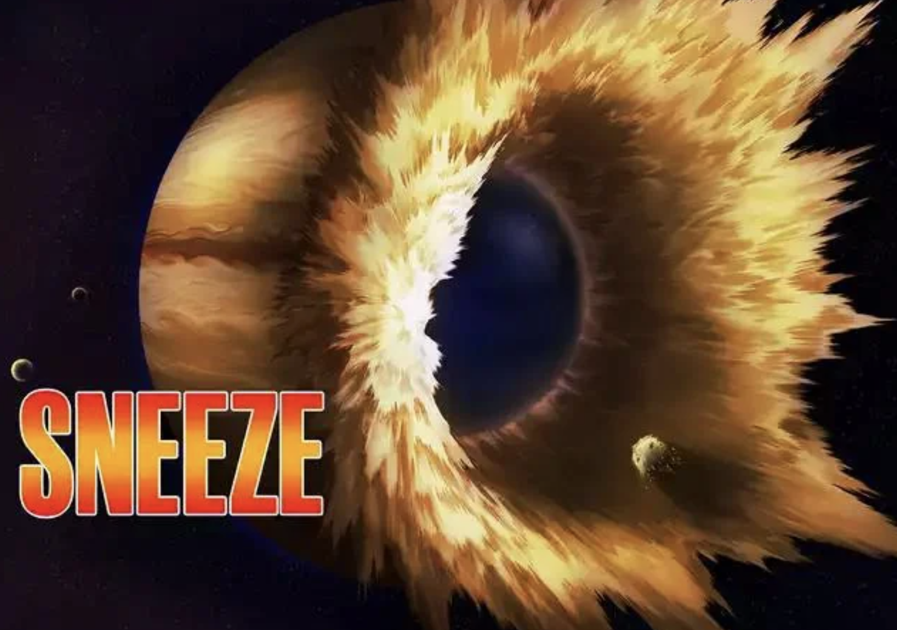
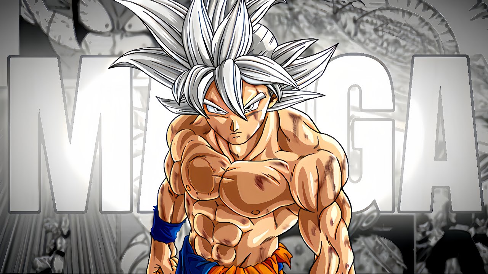
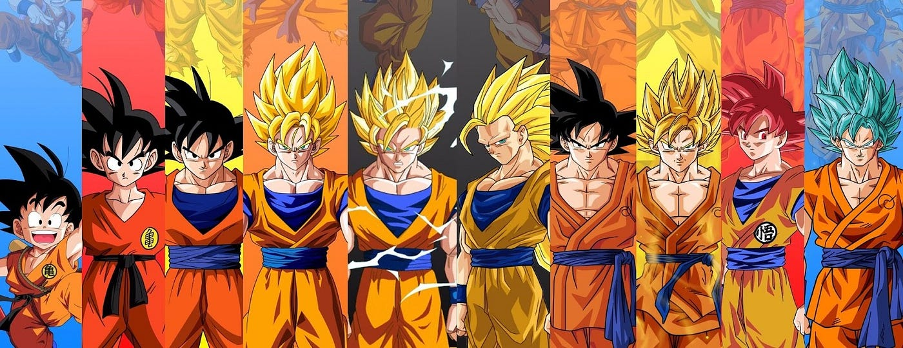
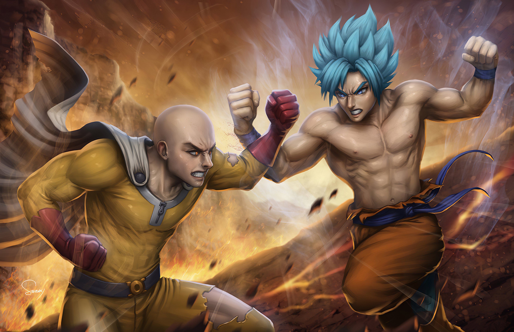

Saitama's Limitless Potential
Breaking the Limiter: This core aspect of Saitama's character implies he surpassed human limitations, potentially achieving infinite potential for growth. Goku, despite transformations and training, seems bound by Saiyan biology and eventually reaches a plateau.
Power: Saitama has never used his full strength, defeating all opponents with casual punches. This hints at a massive hidden reserve, potentially exceeding even Goku's strongest forms.
Saitama Sneezes the Moon
during his battle with Garou, Saitama unleashes a casual sneeze with unimaginable force. This sneeze blows away the entire atmosphere of Jupiter, a gas giant planet with over 1,000 times the volume of Earth. This implies his casual actions possess power vastly exceeding anything Goku has displayed.
Implications for the Debate:
While Jupiter and the moon are different in size and composition, this feat demonstrates the absurd level of power Saitama wields even when not taking a fight seriously. It suggests Saitama's true potential far exceeds even his strongest displayed punches.
The fact that Saitama achieves this with a sneeze, an involuntary action, further supports the argument that his true power remains untapped. This unpredictability could be a significant advantage against Goku, who relies on transformations and training to access his full power.
In Goku's Corner:
Superhuman Strength, Speed, and Durability
Goku's Saiyan heritage grants him incredible physical prowess, surpassing even Earth's mightiest heroes. His training throughout Dragon Ball series refines these abilities to unimaginable levels, allowing him to shatter planets and move faster than light.
Limitless Potential
Goku's defining trait is his insatiable drive to become stronger. Through intense training and transformations like Super Saiyan and Ultra Instinct, he breaks his limits repeatedly, defying any perceived ceiling on his power.
Vast Arsenal of Techniques
Goku's mastery of martial arts and Ki manipulation grants him a diverse arsenal of attacks. From the iconic Kamehameha wave to Instant Transmission, he can adapt his strategies to counter nearly any foe.
Battle-Tested Veteran
Goku possesses decades of combat experience, facing and overcoming countless powerful enemies. This wealth of experience allows him to strategize, adapt, and exploit weaknesses in his opponents.
The Verdict: An Enigma Endures
Ultimately, declaring a definitive winner in this clash of titans is near impossible. Both Goku and Saitama possess seemingly limitless power, making a clear victor difficult to predict.
For the Goku fans
They might argue that Goku's relentless pursuit of strength, diverse skillset, and battle experience could allow him to exploit any potential chink in Saitama's armor, eventually pushing him beyond his limits.
For the Saitama fans
They might contend that Saitama's unfathomable power, unyielding will, and unpredictable techniques could overwhelm even a Super Saiyan's might, leaving Goku ultimately defeated.
Perhaps the true essence of this epic clash lies not in determining a victor, but in appreciating the spectacle of two iconic heroes pushing their limits in a battle that transcends universes. Regardless of who emerges victorious, the fight would undoubtedly be a legendary display of power, skill, and unwavering determination.